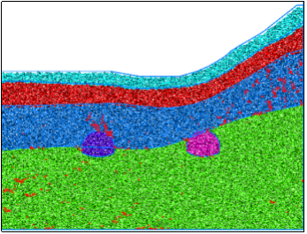
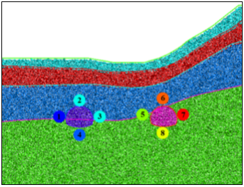
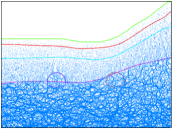
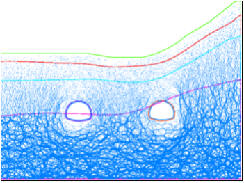
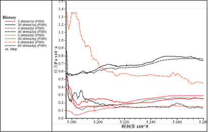
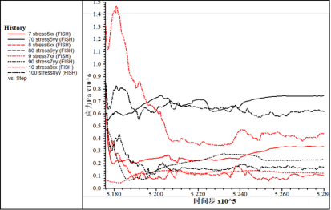
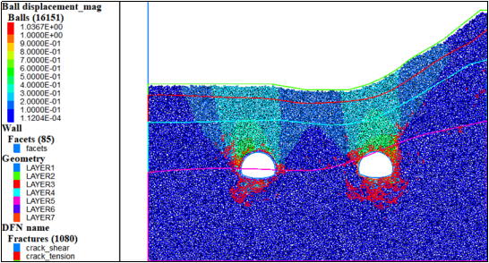

该段隧道定位在YK9+900断面，SLZK4钻孔。岩层主要为粉质黏土、风化千枚状砂岩。
(1) 初始模型

图1 初始模型

图2 测量点布置
根据工程地质横断面图在CAD中等比例绘制隧道断面图，根据断面图等比例生成的先锋顶隧道出口段离散元模型如图1所示，地层从上到下主要为粉质黏土、全风化千枚状砂岩、强风化千枚状砂岩、中风化千枚状砂岩。图2给出了相关量测点位置信息，测量点顺序按照顺时针标记，从1~8依次排布，后文中的测量点排布顺序大多与此相同。
(2)力链分布及调整
从图3可以看出，在上覆岩层风化程度较高的情况下力链分布呈现出明显差异，风化程度较高的上覆岩层力链值较小，且主要呈竖向排列，这意味着上方的应力为自重为主，水平应力的值较小。如图4所示，开挖以后隧道周围应力重分布，力链调整过程十分显著。

图3 初始力链

图4 力链调整
(3) 开挖过程应力调整及位移场
表1 初始地应力
量测点 | 水平应力/MPa | 垂直应力/MPa |
1 | 0.55 | 0.58 |
2 | 0.38 | 0.58 |
3 | 0.1 | 0.44 |
4 | 1.36 | 0.86 |
5 | 0.55 | 0.61 |
6 | 0.78 | 0.83 |
7 | 0.064 | 0.47 |
8 | 1.33 | 0.88 |
开挖过后应力调整不同于先锋顶入口段，由于该段隧道围岩已经较破碎，节理裂隙发育，应力调整以卸载为主，隧道附近围岩的位移场数值达到了0.1m级别，有明显的裂纹扩展和大变形。

图5 左侧隧道应力分布

图6 右侧隧道应力分布

图7 位移